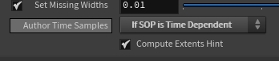
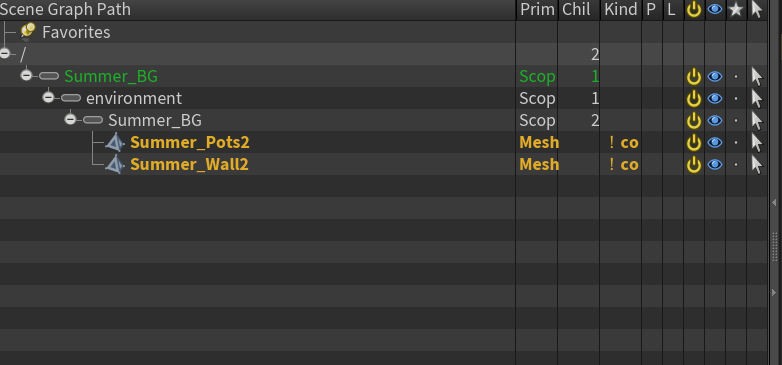

第 3 周
Houdini－Unreal USD 流程
1 月 25 日
已完成：
待办事项：
-
上周我在 Unreal 中测试了 VAT Instancing
-
在 Houdini 中尝试不同的 Instancer 方法，并测试在 Unreal 中的效能
-
在 Unreal 中尝试有动画的 USD Instancing，但没有成功
-
搞懂从 Houdini 到 Unreal 的 USD 流程
-
测试有动画的 USD variants 与 USD 分层流程
静态网格（Static Mesh）：
我认为在 Unreal 中使用 USD 最大的限制是 Unreal 对变形动画的支援不太好。USD 特别适合大规模的场景布局与管理。使用静态网格能让我们在填充与布置场景时更有弹性。
上周我做的是把有动画的 USD 档汇入 Unreal，并成功完成分层。
我也测试了 Yichen 的花。这是我在 Houdini 中为 Yichen 的花朵 variants 做的设定。在 Unreal 中可以选择不同的 variants，如果有多种材质，也可以切换。


我也在 Houdini 中试做了一些材质 variants，这样在 Unreal 中就能选择不同的材质。如果几何体太大，也可以使用 payload。
我也试了 Houdini 的 Layout，可以建立自己的资产库，并用绘制工具摆放植物。布局是用参照的资产产生的，所以布局阶段同样包含并支援资产 variants。

疑难排解
如果要把变形动画以 USD 档汇入 Unreal 并使用分层，必须确认这里开启了 time samples，否则几何体不会动。


在 AI Summit 期间，我进一步研究了 USD Variants，输出 USD 时遇到一些问题。首先，点这里时无法输出 USD，一直出现错误。


也试著管理场景、切换开关，这对资产或模拟来说更有效率。

-
尝试 USD variants 和 PDG
-
尝试套用透明度贴图